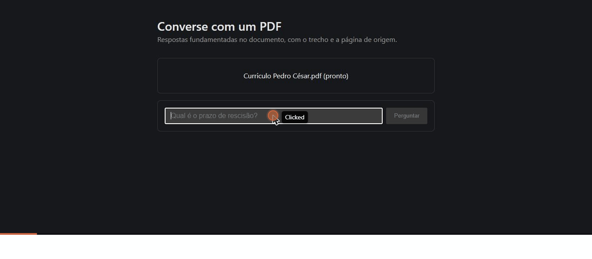

Um sistema de busca e resposta fundamentada: você sobe um documento, pergunta em linguagem natural, e a resposta vem com o trecho e a página exatos de onde ela saiu — ou com um honesto "não encontrei isso no documento".
Upload do PDF, pergunta, resposta com citação — gravado direto do app rodando local.

Embeddings vetoriais encontram o trecho certo mesmo quando a pergunta não usa as mesmas palavras do texto.
Toda resposta vem com o trecho e a página que a fundamentaram — nada de confiar cegamente na LLM.
Um limiar de relevância calibrado bloqueia contexto fraco antes de chegar à LLM. "Não encontrei" é uma resposta correta, não uma falha.
Decisão de arquitetura, não limitação: tanto o embedding quanto a geração de resposta rodam 100% locais — nenhuma chave de API, nenhum dado sai da máquina de quem usa. O mesmo Llama 3.1 8B que garante isso precisa de mais RAM do que qualquer hospedagem gratuita oferece, então a forma honesta de mostrar o projeto é esta página + o código completo, em vez de uma demo hospedada que exigiria abrir mão desse princípio.